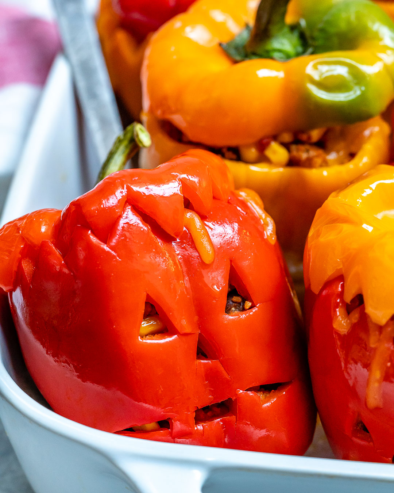

JACK O' LANTERN STUFFED PEPPERS!
Bad at pumpkin carving?? Well, no problem! These will be easiest (and tastiest)
Jack O' Lanterns you'll ever create. These peppers are just the perfect halloween twist
to a classic recipe.
They'll no doubt be a hit with both kids and adults alike. We reccomend that you serve them
as the main course but they can always be enjoyed as a part of a bigger Halloween feast.
Note: There are options for meat lovers, vegetarians
and vegans alike. Please use the drop down menu titled "Jump Ahead" to select your appropriate recipe.
Ingredients
- 4 large orange bell peppers
- 1 teaspoon olive oil
- 1 habenero, minced
- 1 pound ground beef
- 1 cup grated sharp Cheddar cheese
- 1 cup cooked rice
- 2 tablespoons salted butter, melted
- 2 teaspoons salt
- ⅓ cup thinly sliced green onions
- 3 cloves garlic, minced
- 2 tablespoons ketchup
- 2 cups seasoned tomato sauce, warmed
Instructions
- Preheat the oven to 400 degrees F (200 degrees C), and oil a baking dish with olive oil.
- Use a small knife to cut eyes, nose, and mouth into the flattest side of each pepper, just like a jack-o'-lantern. Cut around the seedpods and remove the tops (but do not discard!) Trim and discard all seeds. Remove the white membrane from the inside of each pepper and shake out any remaining seeds. Place in the prepared baking dish.
- In a large bowl, mix together ground beef, salt, pepper, cayenne, habanero, Worcestershire sauce, garlic, green onions, melted butter, ketchup, Cheddar cheese, and rice in a bowl until well combined.
- Stuff mixture evenly into peppers and cover with the pepper tops.
- Wrap the baking dish loosely with foil and place on a sheet pan. Bake in the upper center of the preheated oven for 1 hour.
- Remove the foil and continue baking until peppers are tender and ground beef is cooked through, 10 to 15 more minutes.
- Place stuffed peppers on a few tablespoons of warm tomato sauce. Serve immediately with more sauce on the side.
Dietary Info
Gluten free
low carb
Serving Size
1 stuffed pepper
Calories per Serving
610cal
Full Nutrition info
VEGETARIAN STUFFED JACK O' LANTERNS
For all our vegetarian ghouls and ghoulettes, no worries! Use this recipe instead. Making this recipe vegan friendly is as also easy as simply omitting the cheese. Enjoy!
Ingredients
- 4 large bell peppers
- 3 tablespoon extra virgin olive oil
- ½ cup long-grain brown rice or 1 ½ cups cooked rice
- ½ teaspoon salt
- 1 large yellow onion, chopped
- 2 cups cherry tomatoes, halved or quartered
- ½ cup chopped fresh cilantro
- 4 cloves garlic, minced
- 1 habanero pepper, minced
- 1 teaspoon ground cumin
- 1 can pinto beans, rinsed and drained
- Freshly ground black pepper, to taste
- 1 tablespoon lime juice
- 1 cup grated part-skim mozzarella or cheddar
Instructions
- Preheat the oven to 425 degrees F (218 degrees C), and oil a baking dish with olive oil.
- Prepare rice (skip this step if using cooked rice). Add washed rice to boiling water and continue boiling, uncovered, for 30 minutes (reduce the heat as necessary to prevent overflow). Drain off the remaining cooking water. Set aside.
- Use a small knife to cut eyes, nose, and mouth into the flattest side of each pepper, just like a jack-o'-lantern. Cut around the seedpods and remove the tops (but do not discard!) Trim and discard all seeds. Remove the white membrane from the inside of each pepper and shake out any remaining seeds. Place in the prepared baking dish.
- In a large skillet over medium heat, warm 2 tablespoons olive oil until shimmering. Add onion and salt. Cook until the onion is tender, about 5 minutes. Add habanero and tomatoes and cook for another 5 minutes until they're softened.
- Add the cilantro, garlic, chili powder and cumin. While stirring, cook until the garlic is fragrant, about 30 to 60 seconds.
- Remove the pot from the heat and add cooked rice, beans, lime juice and black pepper and salt to taste. Stir to combine and reseason as needed.
- Stuff mixture evenly into peppers, top the peppers with cheese and then cover with the pepper tops.
- Wrap the baking dish loosely with foil and place on a sheet pan. Bake in the upper center of the preheated oven for 12 to 13 minutes, until the cheese is golden in spots. Serve warm!
Dietary Info
Vegetarian friendly and easily modified to be vegan if cheese is ommited from the veg recipe
Gluten free
Moderate to high carb
Serving Size
1 stuffed pepper
Calories per Serving
Veg: 380cal